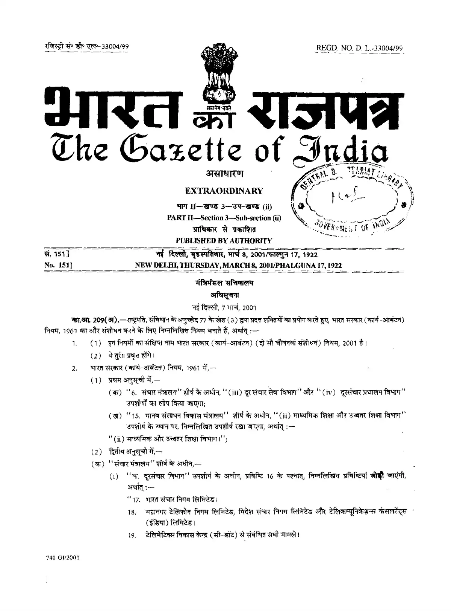
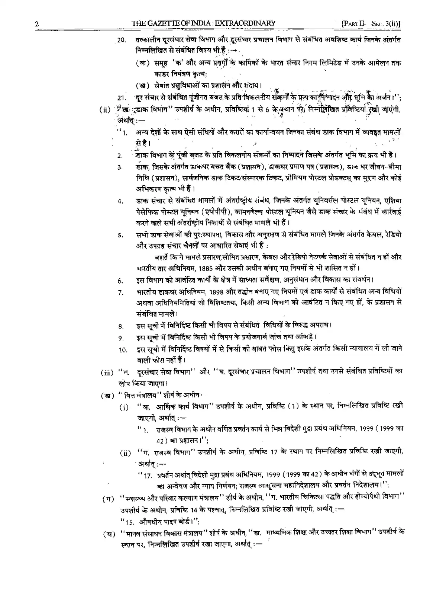
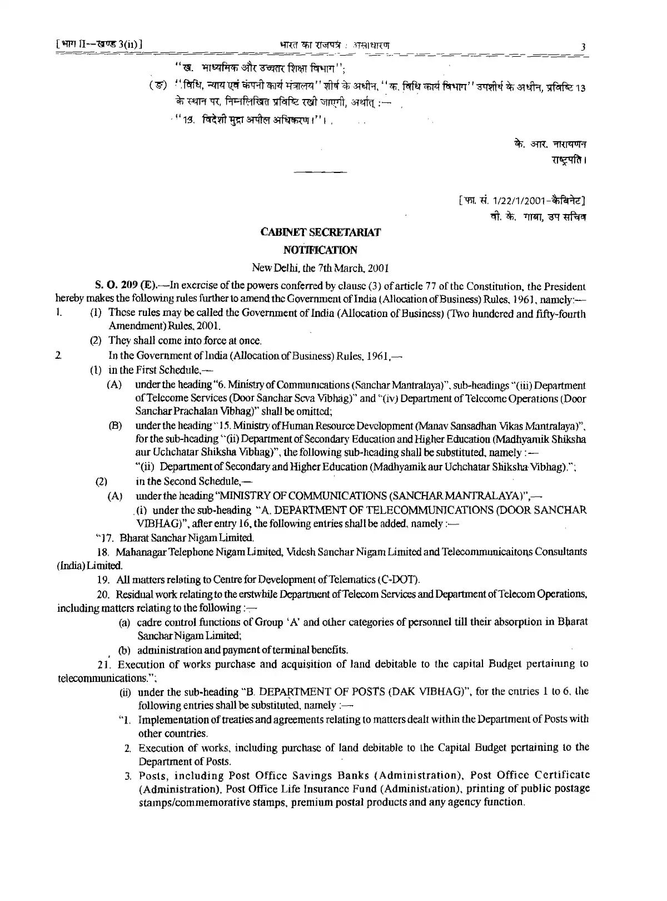
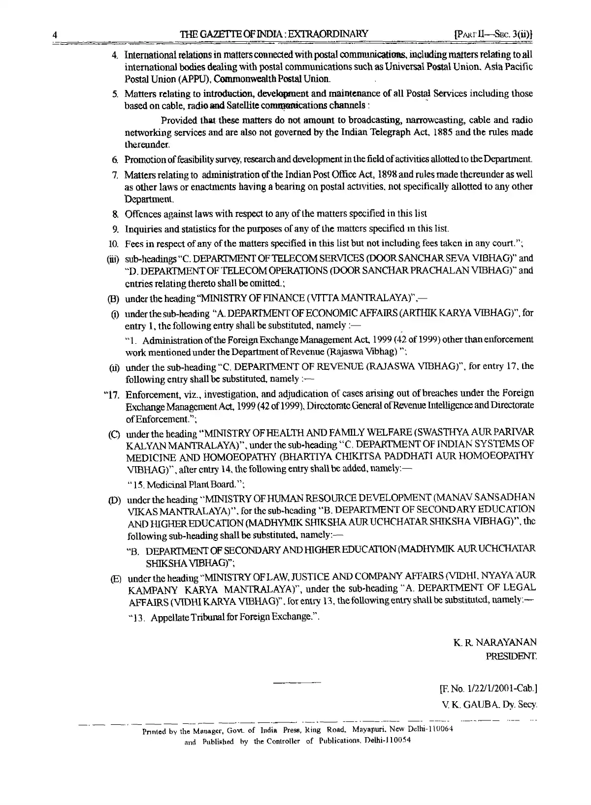

Amendment #254 (S.O. 209(E), 2001)
10 changes: 2 to the First Schedule, 8 to the Second Schedule. 10 applied
What it did to the ministries
- shrankMinistry of Communications shrinks from 40 to 31 subjects change 1, 3, 4, 5 · histories: Communications
The order, page by page
Page 1 of 4

Page 2 of 4

Page 3 of 4

1234Schedule 1 › Ministry of Communications › Department of Telecom Services; Schedule 1 › Ministry of Communications › Department of Telecom Operations
applied at schedule 1 › ministry 7 › department iii in the Rules after #254
Schedule 1 › Ministry of Human Resource Development › Department of Secondary Education and Higher Education
- ii. Department of Secondary and Higher Education
applied at schedule 1 › ministry 16 › department ii in the Rules after #254
new hindi differs
after Schedule 2 › MINISTRY OF COMMUNICATIONS › DEPARTMENT OF TELECOMMUNICATIONS › entry 16
- 17. Bharat Sanchar Nigam Limited.
- 18. Mahanagar Telephone Nigam Limited, Videsh Sanchar Nigam Limited and Telecommunicaitons Consultants (India) Limited.
- 19. All matters relating to Centre for Development of Telematics (C-DOT).
- 20. Residual work relating to the erstwhile Department of Telecom Services and Department of Telecom Operations including matters relating to the following:
- a. cadre control functions of Group 'A' and other categories of personnel till their absorption in Bharat Sanchar Nigam Limited
- b. administration and payment of terminal benefits.
and 1 more
- 21. Execution of works purchase and acquisition of land debitable to the capital Budget pertaining to telecommunications.
applied at schedule 2 › ministry MINISTRY OF COMMUNICATIONS › department A › entry 17 in the Rules after #254
Schedule 2 › MINISTRY OF COMMUNICATIONS › DEPARTMENT OF POSTS › entry
- 1. Implementation of treaties and agreements relating to matters dealt within the Department of Posts with other countries.
- 2. Execution of works, including purchase of land debitable to the Capital Budget pertaining to the Department of Posts.
- 3. Posts, including Post Office Savings Banks (Administration), Post Office Certificate (Administration), Post Office Life Insurance Fund (Administration), printing of public postage stamps/commemorative stamps, premium postal products and any agency function.
- 4. International relations in matters connected with postal communications, including matters relating to all international bodies dealing with postal communications such as Universal Postal Union. Asia Pacific Postal Union (APPU), Commonwealth Postal Union.
- 5. Matters relating to introduction, development and maintenance of all Postal Services including those based on cable, radio and Satellite communications channels:
- Provided that these matters do not amount to broadcasting, narrowcasting, cable and radio networking services and are also not governed by the Indian Telegraph Act, 1885 and the rules made thereunder.
and 5 more
- 6. Promotion of feasibility survey, research and development in the field of activities allotted to the Department.
- 7. Matters relating to administration of the Indian Post Office Act, 1898 and rules made thereunder as well as other law's or enactments having a bearing on postal activities, not specifically allotted to any other Department.
- 8. Offences against laws with respect to any of the matters specified in this list
- 9. Inquiries and statistics for the purposes of any of the matters specified in this list.
- 10. Fees in respect of any of the matters specified in this list but not including fees taken in any court.
applied at schedule 2 › ministry MINISTRY OF COMMUNICATIONS › department B › entry 1 in the Rules after #254
read page break
Page 4 of 4

5678910Schedule 2 › MINISTRY OF COMMUNICATIONS › DEPARTMENT OF TELECOM SERVICES; Schedule 2 › MINISTRY OF COMMUNICATIONS › DEPARTMENT OF TELECOM OPERATIONS
applied at schedule 2 › ministry MINISTRY OF COMMUNICATIONS › department C in the Rules after #254
Schedule 2 › MINISTRY OF FINANCE › DEPARTMENT OF ECONOMIC AFFAIRS › entry 1
- 1. Administration of the Foreign Exchange Management Act, 1999 (42 of 1999) other than enforcement work mentioned under the Department of Revenue (Rajaswa Vibhag)
applied at schedule 2 › ministry MINISTRY OF FINANCE › department A › group_heading I › entry 1 in the Rules after #254
Schedule 2 › MINISTRY OF FINANCE › DEPARTMENT OF REVENUE › entry 17
- 17. Enforcement, viz., investigation, and adjudication of cases arising out of breaches under the Foreign Exchange Management Act, 1999 (42 of 1999), Directorate General of Revenue Intelligence and Directorate of Enforcement.
applied at schedule 2 › ministry MINISTRY OF FINANCE › department C › entry 17 in the Rules after #254
after Schedule 2 › MINISTRY OF HEALTH AND FAMILY WELFARE › DEPARTMENT OF INDIAN SYSTEMS OF MEDICINE AND HOMOEOPATHY › entry 14
- 15, Medicinal Plant Board.
applied at schedule 2 › ministry MINISTRY OF HEALTH AND FAMILY WEL- FARE (SWASTHYA AUR PARIVAR KALYAN MANT- RALAYA) › department… in the Rules after #254
Schedule 2 › MINISTRY OF HUMAN RESOURCE DEVELOPMENT › DEPARTMENT OF SECONDARY EDUCATION AND HIGHER EDUCATION
- B. DEPARTMENT OF SECONDARY AND HIGHER EDUCATION
applied at schedule 2 › ministry MINISTRY OF HUMAN RESOURCE DEVELOP- MENT › department B in the Rules after #254
Schedule 2 › MINISTRY OF LAW, JUSTICE AND COMPANY AFFAIRS › DEPARTMENT OF LEGAL AFFAIRS › entry 13
- 13. Appellate Tribunal for Foreign Exchange.
applied at schedule 2 › ministry MINISTRY OF LAW, JUSTCE AND COMPANY AFFAIRS( › department A › entry 13 in the Rules after #254
states inferred loose
How this document was read
Edits to the reading
| Date | By | Edit | Before → after |
|---|---|---|---|
| 11 November 2026 | mukundesh | word corrected | |
| 12 November 2026 | claude | word corrected |
Changes placed by an inference rule
| Change | Rule | Status | What |
|---|---|---|---|
| 10 | loose | accepted | change 10: ministry MINISTRY OF LAW, JUSTICE AND COMPANY AFFAIRS taken for ministry MINISTRY OF LAW, JUSTCE AND COMPANY AFFAIRS(, named loosely |
From the Government of India (Allocation of Business) Rules, 1961 and their amendments, as published by the Cabinet Secretariat (cabsec.gov.in), read by orgpedia. The readings of the older scanned gazettes have known gaps.